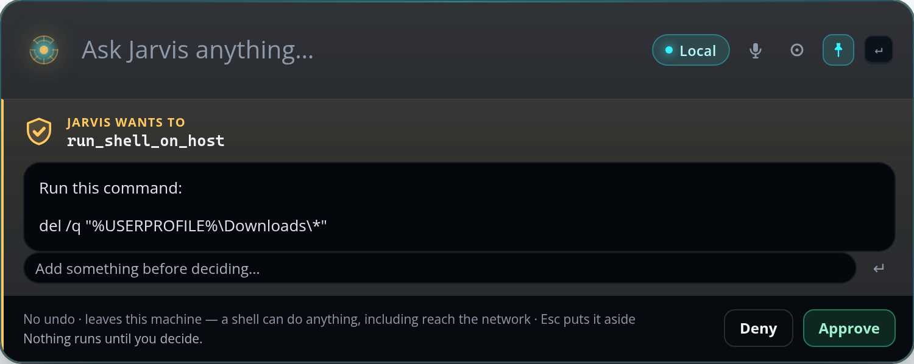
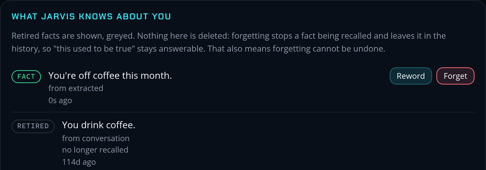

“Hey Jarvis” only listens once you switch it on.
An AI assistant that asks
before it acts.
Every time.
Nobody can shout “yes” at it.
You tap to approve.
On your PC

Answered on the phone. Cleared here too.
9:41
EXPIRES IN00:47
Jarvis wants to run shell on host
Run this command:
del /q "%USERPROFILE%\Downloads\*"
ApproveDeny
✓ Approved
Jarvis wants to run shell on host
a shell can do anything, including reach the network
Touch the fingerprint sensor
Use PIN
On your phone
Your email, your files, and what it
knows about you stay on your PC.
September.
It asks before it remembers, too.

Set aside, not deleted.
Your assistant.
Your PC.
Your rules.
Today: a PC with an 8 GB NVIDIA graphics card.
Next: any 8 GB card, up to two. No subscription.
Jarvis